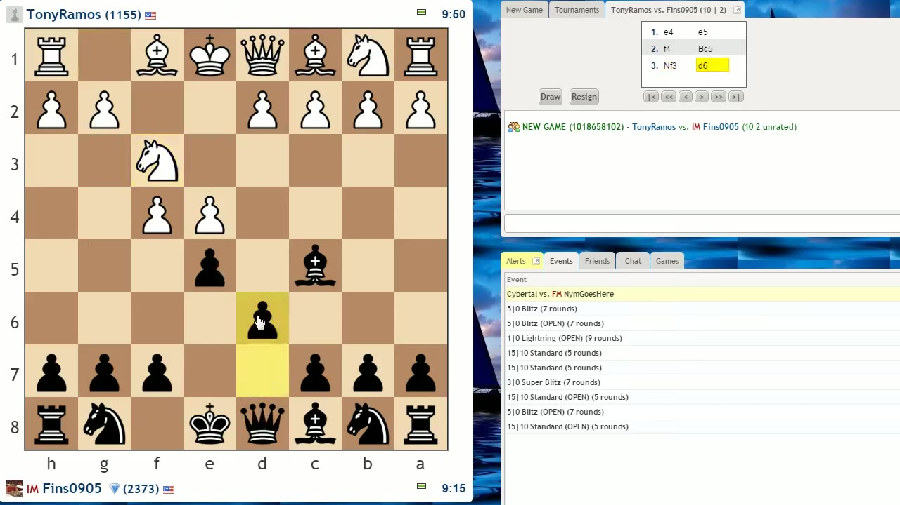
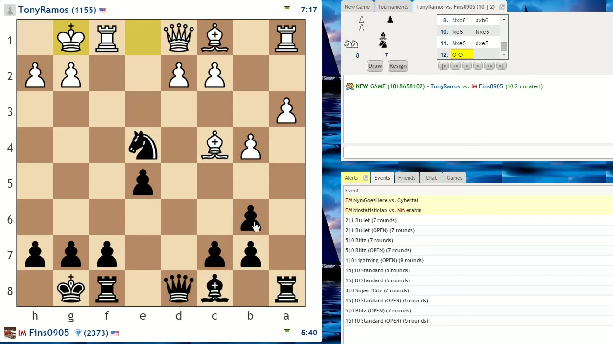
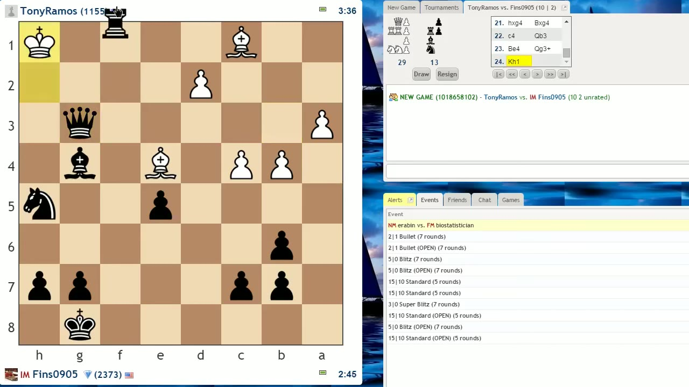
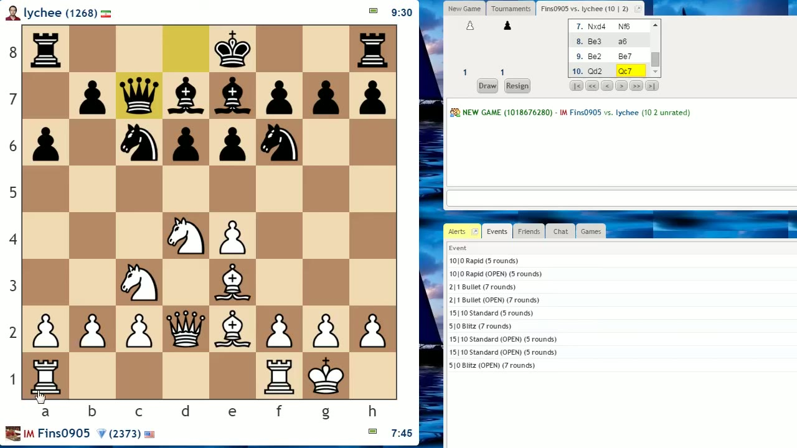
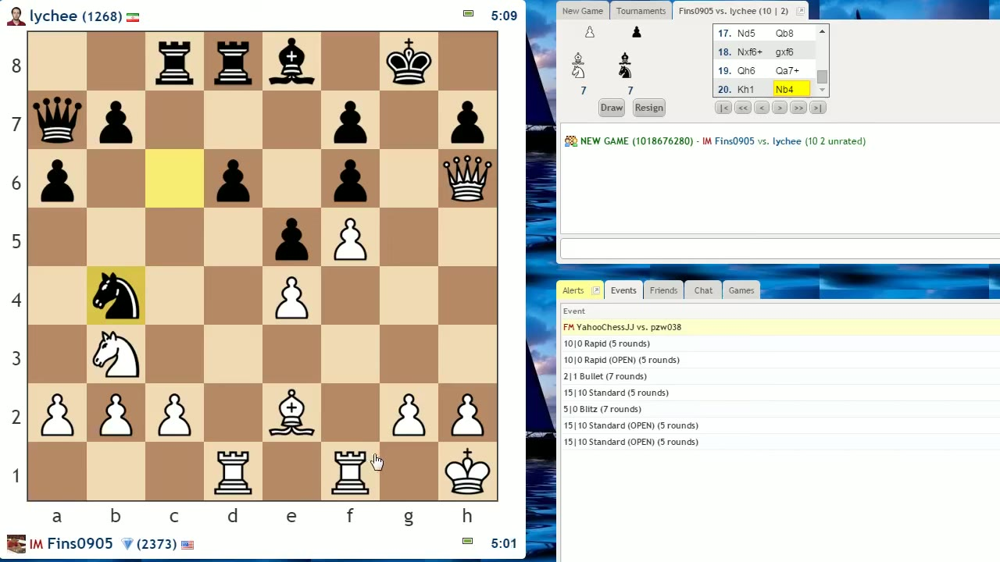
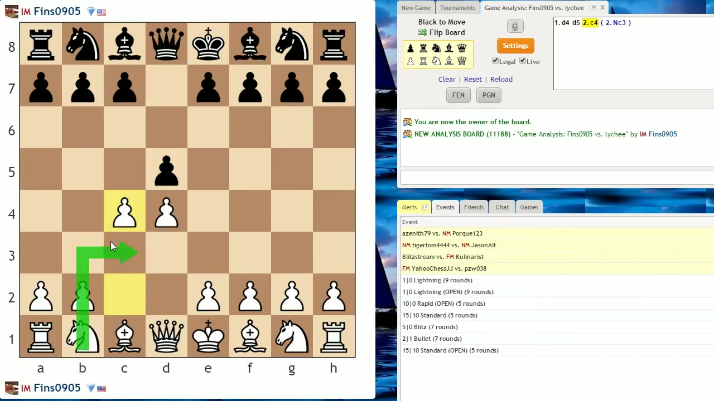

International Master John Bartholomew plays two live games against improving players, then breaks down a teaching position — all to make one point: stop fussing over single pieces and get your whole army working together.
Creator: John BartholomewRuntime: 52 minVideo published: January 4, 2015634.8K views when summarized
Only push a pawn if it helps you develop a piece — beginners under ~1200 make far too many pawn moves in the opening.
Don't move the same piece twice early unless there's a real reason; it leaves the rest of your army behind.
Coordination means spreading play across all your pieces, not pouring everything into one piece or one operation.
When you're behind in development, stop trading — every exchange just widens your opponent's lead.
The c-pawn and the knight have a "happy marriage" only when the pawn leads (c4 then Nc3), not when the knight blocks it.
01 · King's Gambit
Develop the bishop, don't trap it
First live game, a 1155-rated opponent opens with the King's Gambit. Rather than grab the f4 pawn, Bartholomew plays Bishop c5 and follows with d6 — keeping the dark-squared bishop outside the pawn chain instead of locking it in behind a d-pawn.

Bishop c5 and d6: the bishop sits on an open diagonal pointing at g1, and the d6 pawn props up e5 without blocking the bishop in.00:02:55
The point is restraint, not aggression. Bartholomew flags the trap waiting in the wings: if White grabs the e5 pawn, Black answers Queen h4+, forking king and the e4 pawn — and after the dust settles the h1 rook hangs.
Only move pawns if it facilitates your piece development.— John Bartholomew
The recurring sinHe keeps returning to one beginner habit: moving the same piece twice in the opening, or making a pawn move (a3, b4) that serves no developing purpose. Each one cedes a tempo.
02 · The fork
One loose piece, one move
White, already behind in development, plays Knight d5 — a third knight move that commits two errors at once: it leaves the e4 pawn undefended and it chases a single piece (Black's b6 bishop) instead of finishing development. Bartholomew takes the free pawn, trades down, and waits.

After White castles, Queen d4+ is a triple fork: check on the king, an attack on the loose c4 bishop, and a hit on the a1 rook. The weak diagonal — a lingering cost of the King's Gambit's early f4 — is what makes it possible.00:09:40
This Knight d5 move just perfectly hits the two concepts we've discussed.— John Bartholomew
He takes the rook. The fork wasn't luck — it was the dividend of being a step ahead in development and letting the opponent's loose pieces accumulate.
03 · Finishing
Develop, then mate
Up a rook, Bartholomew refuses to rush. He plays Bishop e6 to develop his last piece, connect his rooks, and defend f7 all in one move — the kind of move that "combines goals." Then the position plays itself.

The final position: with every black piece coordinated and White's bishop still stuck at home, Rook f1 is checkmate.00:17:10
The lesson under the winEven when you're winning easily, keep coordinating. Bartholomew having already moved his light-squared bishop is what let him recapture cleanly with the rook later — small habits compounding into a clean finish.
04 · Sicilian
Develop first, plan later
Second game, a stronger 1268 opponent plays a Sicilian. Bartholomew praises this player throughout — minor pieces out in one move each, only useful central pawn moves. He develops quickly, castles, and only then starts thinking about a plan.

All four minor pieces developed and centralized, king castled, rook lifted to the open d-file, and f4 played to grab the e5 square. Plans come after development, not instead of it.00:27:01
You don't have to feel like you immediately have to get a rook to the center.— John Bartholomew
Why f4, not e5 yetf4 gains control of e5 and threatens to push e5 later. It's the kind of pawn move he endorses — it opens lines and supports the pieces rather than drifting aimlessly.
05 · Securing d5
The rook lift
Black's e5 push weakens d5, and Bartholomew counts four pieces trained on that hole. He plays Bishop g5 to trade off the knight guarding it, then plants his own knight on d5 — this time with tempo, hitting the queen and bishop, the textbook way to move a piece twice.

With the knight gone from f6 and Black's major pieces stranded on the queenside, the queen swings to the kingside and a rook lift to f3 brings the decisive attacker. The mate threats follow.00:34:53
The fact that I have Rook f3 available here — it's not just blind luck, it's the fact that I've been doing everything correctly in regards to coordination.— John Bartholomew
Contrast with game oneHe explicitly compares: in game one the opponent's Knight d5 dropped a pawn and chased a piece. Here his own knight reaches d5 far later, with tempo, improving the position rather than gambling it.
06 · Knights and c-pawns
The happy marriage
To close, a teaching position on d-pawn openings. After 1.d4 d5, beginners wonder why Knight c3 is frowned upon — it's a developing move, isn't it? The problem is that the knight blocks the c-pawn, and in d-pawn structures the c-pawn is the lever you need to pressure d5.

Play c4 (the Queen's Gambit) and then Nc3, and you get two attackers on d5 with the pawn leading the way. Pawn in front, knight behind.00:46:46
Having a pawn on c4 and a knight on c3 represents a happy marriage; having the knight in front and the pawn behind is an unhappy marriage.— John Bartholomew
Open structures (1.e4)It's fine to develop the knight before the c-pawn — coordination is mostly about the pieces.
Closed structures (1.d4)Think about pawn-and-piece coordination together; don't let Nc6 or Nc3 jam the c-pawn you'll want to push.
If the bishop is stuckAfter e6 in the Queen's Gambit Declined, fianchettoing the light-squared bishop to b7 is one opening where he grants permission.
The whole video in one lineStrive for harmonious positions — multiple pieces working together — and never rely on one or two pieces to do everything for you.